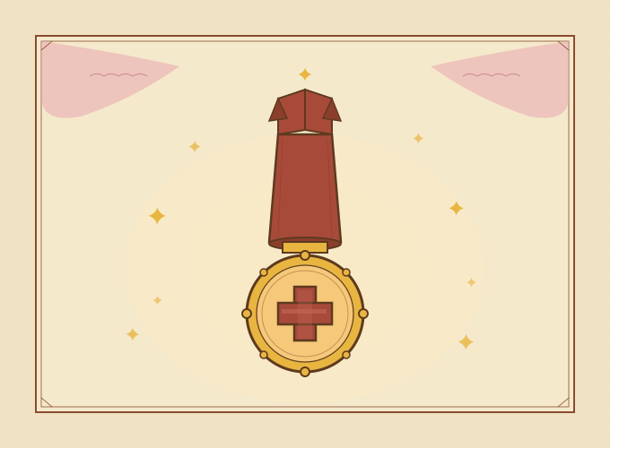
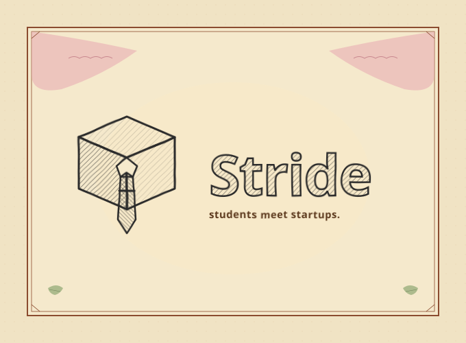
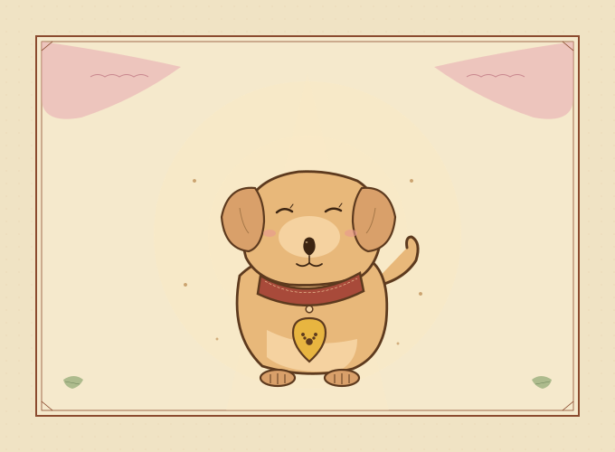
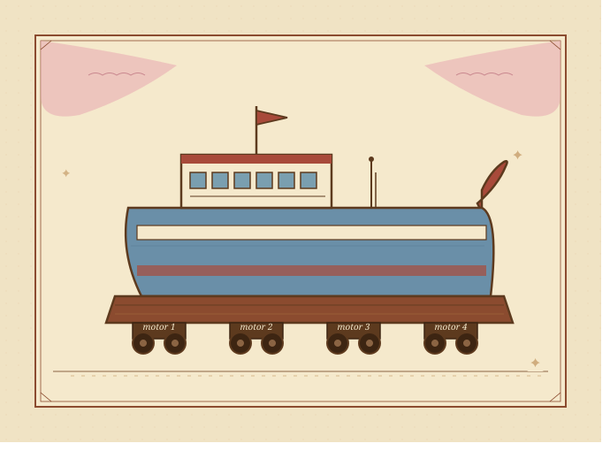
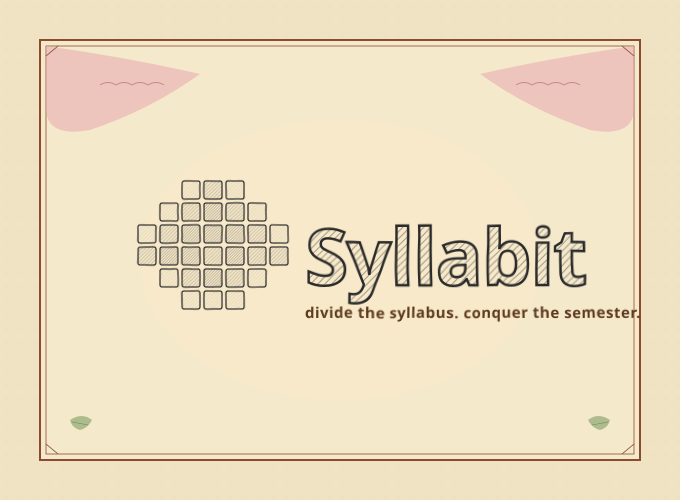

❦ ❦ ❦
A portfolio in six parts
the tales of Shriya
a collection of works, wonders, & what-ifs
⸺ ❦ ⸺
⸺ ✦ ⸺
a collection of works, wonders, & what-ifs
and a letter at the end
our author, pictured
in which we make her acquaintance
Our author, by her own account, was raised on circuit diagrams and library cards in equal measure. She trained first as an electrical engineer — a discipline that taught her to respect small voltages and smaller deadlines — and has since taken a long, roundabout path toward the question of why we build the things we build.
These days she keeps her attention on product: how it gets shaped, who it gets shaped for, and the strange gap between what people ask for and what they actually need. She teaches, occasionally. She writes, when the weather cooperates. And she remains, at heart, a maker of things that beep, blink, or otherwise prove they exist.
If you would like to know more, please turn the page.
small expeditions, mostly completed

A medical education platform at a fork: build or buy? She weighed five vendors, chose well, and cut projected costs by nearly three-quarters.
Students on one side. Freshly-funded startups on the other. She built the bridge — an NLP-driven matcher for jobs and interview prep.


A stray picked up off the street. A shelter, a vet, a unique ID. Then an AI agent quietly matching the animal with the right home.
Four motors, one coordinated lift. Kept in perfect sync across thirty test cycles, trimming 12% off the build cost.


University is built around one kind of attention. Syllabit reshapes a syllabus around the way an ADHD mind actually works.
"Told roughly in order, with occasional liberties taken."
a roundabout, in roughly chronological order
A bachelor's in electrical engineering, spent studying electrons and occasionally surprising them. The beginnings of a suspicion that the best engineering problems are usually people problems.
An early role in engineering. Brief, instructive, and full of polite meetings about impolite problems.
A pivot from engineering toward product, undertaken through the DAPL program. Build-vs-buy became a more interesting question than build-vs-also-build.
Preceptor and facilitator work for seminars on innovation and organizational culture. Reading closely, and watching twenty people argue about the readings politely.
Currently seeking a product or product-marketing role where an engineer's instincts are still welcome. Watch this page.
"One writes, it is said, in order to find out what one thinks."
short essays, scribbled in the margins
"The most interesting product decisions are rarely the ones that make it into the slide deck. They live in the hallways, in the half-sentence asides…"
"An engineer learns, early on, that the thing you wanted to build and the thing you actually built are almost never the same thing. This turns out to be a useful thing to know…"
"What Berns calls an iconoclast, most teams just call a nuisance. The distinction, it turns out, is mostly about timing…"
"A small practice: keep a list of the things you chose not to do this week, and why. Read it back on Friday. Try not to flinch…"
"Of all the ways to discover what one does not know, teaching is the most reliable."
a brief account of seminars held
Teaching has always struck our author as the most reliable way to find out whether she actually understands something. A short record follows.
A seminar session drawing on Gregory Berns's Iconoclast, with structured discussion prompts and a handful of gently-contentious questions.
— seminar · facilitation · pdf
A session built on Edgar Schein's Organizational Culture and Leadership. Cold-call prompts, a facilitation protocol, and notes on managing silences.
— seminar · schein · facilitation
Occasional one-on-one preparation for friends heading into product, engineering, or editorial interviews. STAR stories and the usual.
— coaching · on request
"A note from the author, in closing."
or: how to find the author, should you wish to
Dear Reader,
If you have turned every page and found something worth keeping — a project worth discussing, a piece of writing worth quarrelling with, a role you think might suit — I would be glad to hear from you.
Correspondence of any kind is welcome. I can be reached by the usual means:
Yours, in pursuit of good questions,
Shriya
Click a chapter from the contents, or use ← → to turn pages